Introduction
Progetto finale del corso di studio Ingegneria dei sistemi software M, Laurea Magistrale Università di Bologna. (SPRINT 1 versione 2)
Versione 1
Versione 1
Requirements
Una compagnia intende costruire un WasteService per la raccolta differenziata.
- Una zona di servizio (rettangolare, pianeggiante) che comprende:
- una porta INDOOR , per l'immissione di materiale di scarto
- un contenitore PlasticBox , dedicato alla conservazione di oggetti in plastica, fino a MAXPB kg di materiale.
- un contenitore GlassBox , dedicato alla conservazione di oggetti in vetro, fino a MAXGB kg di materiale.

- Un robot DDR che funge da carrello di trasporto (Trolley) , che è inizialmente situato nella sua posizione HOME.
Il Trolley ha la forma di un quadrato di lunghezza laterale RD.
Il Trolley viene utilizzato per svolgere un'azione di deposito che consiste nelle seguenti fasi:
- raccogliere un carico di rifiuti da un camion dei rifiuti situato all'INDOOR
- passare dall'INDOOR all'apposito contenitore dei rifiuti
- depositare il carico di scarto nel contenitore
- Un Service-manager (un essere umano) che supervisiona lo stato dell'area di servizio utilizzando una WasteServiceStatusGUI .
- Un Sonar e un Led collegati a un RaspberryPi. Il Led viene utilizzato come dispositivo di segnalazione , secondo il seguente schema:
- il Led è spento quando il Trolley è in HOME
- il Led lampeggia mentre il Trolley è in movimento
- il Led è acceso quando il Trolley è fermo. (Stopped) Il Sonar viene utilizzato come 'dispositivo di allarme': quando misura una distanza inferiore ad un valore prefissato DLIMT ,
il Trolley deve essere fermato. Verrà ripreso quando il Sonar rileverà una distanza maggiore di DLIMT .
- L'obiettivo principale del software WasteService è quello di consentire a un camion dei rifiuti di depositare il proprio carico di TruckLoad kg di plastica o vetro nell'apposito contenitore.
Il comportamento può essere descritta come segue:
- Il camion si avvicina all'INDOOR e invia (tramite un dispositivo smart) la richiesta di immagazzinare il carico, specificando la tipologia del materiale (plastica o vetro) e il suo TruckLoad .
- WasteService invia la risposta loadaccept se il contenuto finale del contenitore appropriato non supererà il valore massimo consentito ( MAXPB o MAXGB ). In caso contrario, invia la risposta loadrejecetd e il camion dei rifiuti lascia l' area INDOOR.
- Quando il carico viene accettato, il Trolley raggiunge l' INDOOR , preleva il materiale, va all'apposito contenitore e deposita il materiale.
Durante questa attività il WasteService fa lampeggiare il Led.
- Quando l'azione di deposito è terminata, il robot esegue un altro comando di deposito (se presente) o ritorna alla sua HOME .
- WasteService deve creare una WasteServiceStatusGUI che mostri al Service-manager :
- lo stato attuale del carrello di trasporto e la sua posizione nella stanza
- il peso attuale del materiale stoccato nei due contenitori per rifiuti
- lo stato attuale del Led
Requirement analysis
PUNTI APERTI:
- Dimensioni e coordinate PlasticBox, GlassBox, INDOOR e HOME, inoltre la piantina della stanza è nota a priori?
Sono note a priori - Waste Truck attende fino a che il carico non é stato prelevato?
Sí e puó attendere anche fino alla fine dell'azione di deposito - Plastic e Glass Box possono essere "svuotati" oppure il loro carico puó solo aumentare?
No, possono solo aumentare - I valori MAXGB, MAXPB, RD e DLIMIT sono definiti a priori e da chi vengono decisi?
Sono definiti a priori - TruckLoad e il tipo di carico come viene definito e cosa si intende per dispositivo smart?
Casualmente
REQUISITI FUNZIONALI
- Richiesta ed eventuale Trasferimento del carico (RF1):
Il WASTE_TRUCK invia una richiesta al WASTE_SERVICE con le caratteristiche del carico (tipo e peso), successivamente il WASTE_SERVICE, in base allo stato attuale (capacitá residua disponibile) accetta (loadaccept) o meno (loadrejecetd) il carico.
Se il carico viene accettato, il WASTE_SERVICE comunica ciò al TROLLEY che si sposta verso l'area INDOOR per prelevare il carico, dopo aver effettuato il prelievo lo notificherá alle varie enitá poi effettua il trasferimento ed infine richiede al WASTE_SERVICE se é presente un nuovo carico:
- Risposta positiva: il TROLLEY si muove verso l'area INDOOR
- Risposta negativa: il TROLLEY torna alla HOME
- Sonar e Led (RF2):
in base alla distanza rilevata dal SONAR, il TROLLEY muta il suo comportamento:
- Distanza minore di DLIMIT: il TROLLEY si ferma.
- Distanza superiore a DLIMIT: il TROLLEY si muove.
- Acceso: TROLLEY fermo a causa del SONAR (stopped).
- Spento: TROLLEY in HOME.
- Lampeggiante: TROLLEY in azione.
- GUI (RF3):
é presente una gui che mostra:
- Stato corrente del TROLLEY
- Peso corrente dei due box
- Stato del LED
REQUISITI NON FUNZIONALI
- Posizione iniziale: il trolley parte dalla posizione HOME.
- Dimensione TROLLEY: il trolley ha lunghezza di lato RD.
- Proattività: il trolley deve muoversi in modo autonomo fino al completamento del lavoro.
- Reattività: in caso di allarmi, in particolare, quando il sonar rileva una distanza minore di DLIMIT, il TROLLEY sospenda il lavoro.
- Raspberry: il LED ed il SONAR sono componenti di un RaspberryPI
COMPONENTI A DISPOSIZIONE
Il committente mette a disposizione un DDR Robot che dovrá fungere da TROLLEY (LINK)MODELLO REQUISITI
Dopo un'attenta analisi dei requisiti si puó evincere che:Le entitá in gioco sono le seguenti:
- WASTE_SERVICE, TROLLEY, LED e SONAR che vengono modellate logicamente come degli attori in quanto possono operare su nodi differenti.
- WASTE_TRUCK e GUI modellati mediante un POJO visto che operano esternamente al sistema.
Il TROLLEY esegue delle azioni di deposito articolate in tre fasi (Pick up, Trasferimento, Deposito) esse vengono innescate dal WASTE_SERVICE, le modalitá di interazioni tra le due entitá non vengono specificate nei requisiti e quindi verranno valutate in fase di analisi del problema. Stesse considerazioni si possono fare per verificare la presenza o meno di un nuovo carico da depositare.
Infine il WASTE_SERVICE deve comunicare anche con LED e WasteServiceStatusGUI, anche in questo caso le modalitá di interazione verranno analizzate nella fase successiva. Stesso discorso per quanto riguarda la modalitá di comunicazione del SONAR
Di seguito viene riportata l'archittettura logica dell'analisi dei requisiti.
CODICE: Modello esegibile
TEST: Test analisi requisiti
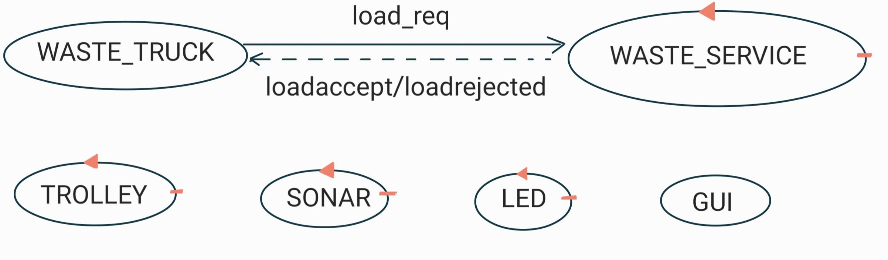
PROBLEMATICHE RF1
In questo Sprint ci concentreremo solamente sul RF1.RITIRO
Quando una richiesta da parte del WASTE_TRUCK viene accettata dal WASTE_SERVICE (loadaccept), vi é la necessitá di comunicare al TROLLEY di andare a prelevare il carico presso l'INDOOR.INVIO LOADACCEPT
Definire la fase in cui conviene inviare la loadaccept in caso di carico accettato.PICK UP EFFETTUATO
Quando il TROLLEY effettua il prelievo (pick up) deve comunicarlo al WASTE_SERVICE e al WASTE_TRUCK, in modo tale da liberare l'area di INDOOR nel momento piú appropriato.COORDINATE DEI BOX
Chi é a conoscenza delle coordinate dei box.TROLLEY COME ATTUATORE
Sarebbe opportuno che il TROLLEY non contenesse logica di business in modo tale da renderlo completamente indipendente dal sistema.
Problem analysis
PROBLEMATICHE RF1 EVIDENZIATE DURANTE L'ANALISI DEI REQUISITI
RITIRO
Le modalitá di interazione possibili sono le seguenti:- DISPATCH:
- PRO: la connessione é reliable (viene rilevata un'eventuale mancata ricezione) e si utilizza un solo messaggio.
- CONTRO: si instaura un legame tra le due entitá.
- REQUEST-RESPONSE:
- PRO: la connessione é reliable (viene rilevata un'eventuale mancata ricezione) e segnalo anche il completamento del pick up.
- CONTRO: si instaura un legame tra le due entitá e si utilizzano due messaggi.
- EVENTO:
- PRO: entitá disaccoppiate.
- CONTRO: la connessione non é reliable ( non viene rilevata un'eventuale mancata ricezione) e quindi c'é il rischio di bloccare l'intero sistema.
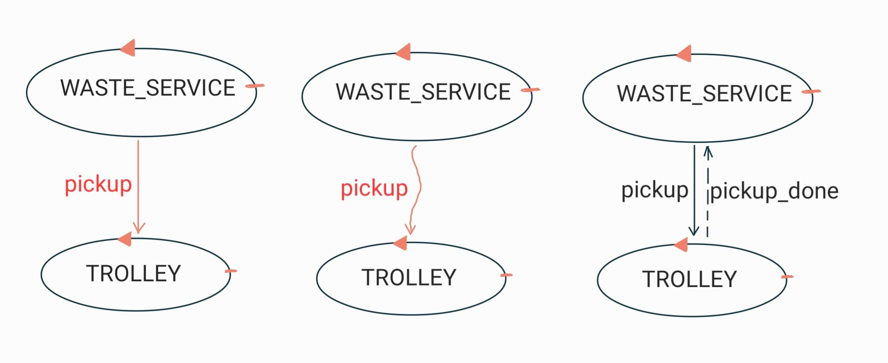
CONCLUSIONI
Visto che non vi sono richieste esplice del committente si sconsiglia l'utilizzo dell'evento in quanto ogni carico accettato deve essere servito e non vi é il rischio di bloccare l'intero sistema.INVIO LOADACCEPT
- Subito dopo aver controllato la disponibilitá di spazio:
- PRO: notifico immediatamente l'accettazione al WASTE_TRUCK.
- CONTRO: necessito di un'ulteriore interazione per segnalare l'avvenuto pick up.
- Dopo aver effettuato il pick up:
- PRO: utilizzo un unico messaggio per segnalare due informazioni.
- CONTRO: perdo leggermente di espressivitá.
CONCLUSIONI
Visto che non vi sono richieste esplice del committente si consiglia per realizzare un'implementazione piú snella di utilizzare la seconda opzione.PICK UP EFFETTUATO
Le modalitá di interazione possibili sono le seguenti:- DUE DISPATCH VERSIONE 1:
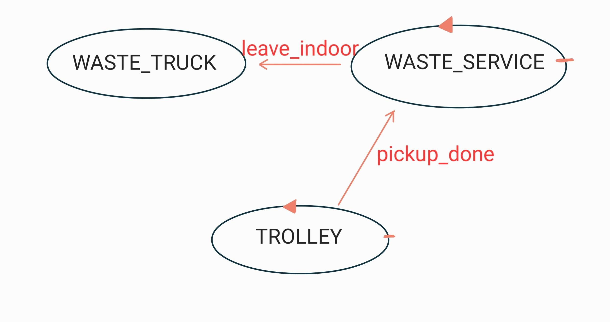
- PRO: la connessione é reliable (viene rilevata un'eventuale mancata ricezione).
- CONTRO: si instaura un legame tra le tre entitá e si genera una "catena" di messaggi (TROLLEY -> WASTE_SERVICE -> WASTE_TRUCK).
- DUE DISPATCH VERSIONE 2:
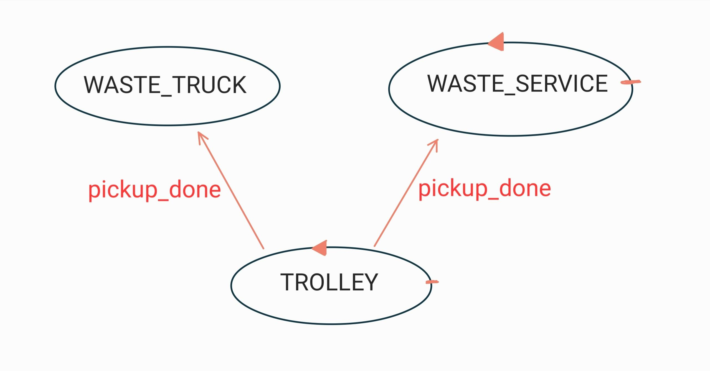
- PRO: la connessione é reliable (viene rilevata un'eventuale mancata ricezione).
- CONTRO: si instaura un legame tra le tre entitá, quindi il TROLLEY deve conoscere sia il WASTE_SERVICE che il WASTE_TRUCK e sono necessari due messaggi.
- DISPATCH E RESPONSE:
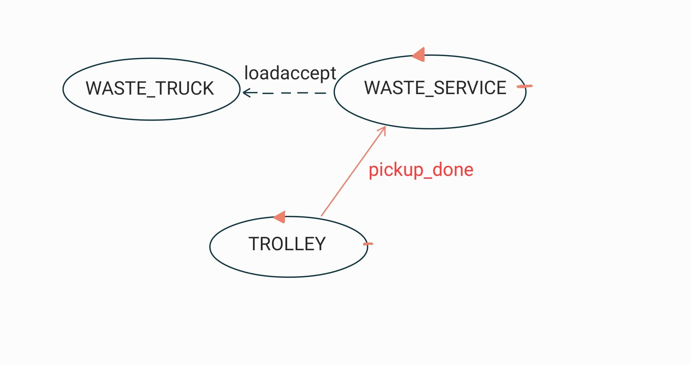
- PRO: si sfrutta una comunicazione giá presente per comunicare l'azione al WASTE_TRUCK, inviando la risposta (loadaccept) solo quando il carico é stato prelevato.
- CONTRO: il TROLLEY deve conoscere il WASTE_SERVICE.
- DUE REQUEST-RESPONSE:
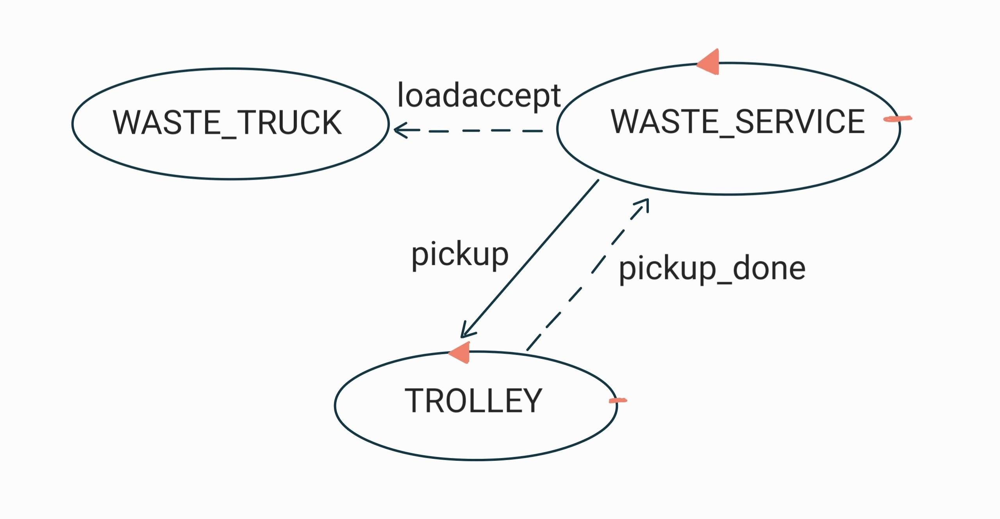
- PRO: si utilizza una una connsessione reliable (viene rilevata un'eventuale mancata ricezione) e vengono utilizzati messaggi giá presenti, inviando la risposta (loadaccept) solo quando il carico é stato prelevato.
- CONTRO: il numero di messaggi scambiati é elevato.
- EVENTO:
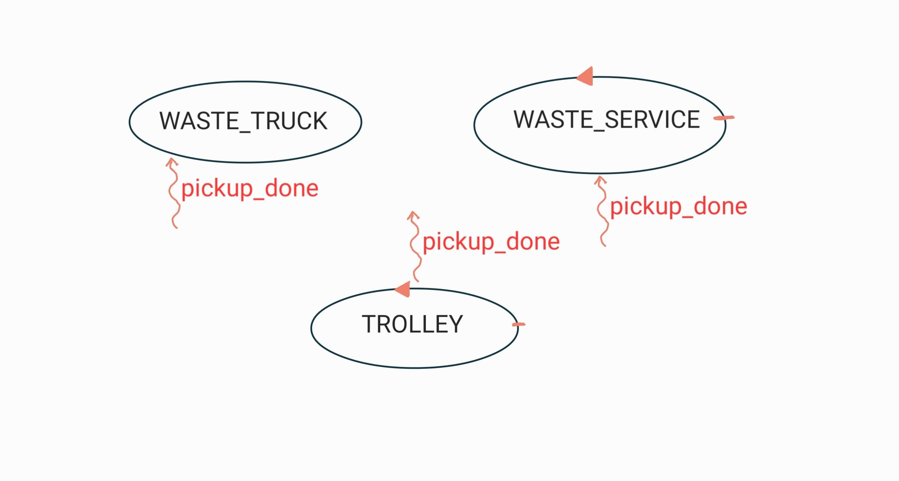
- PRO: entitá disaccppiate e si utilizza un unico messaggio.
- CONTRO: la connessione non é reliable (non viene rilevata un'eventuale mancata ricezione) perció se viene perso l'evento si blocca l'intero sistema.
CONCLUSIONI
Visto che non vi sono richieste esplice del committente vi sono due vie possibili:- La prima prevede l'utilizzo dell'evento con la consapevolezza che in caso di perdita il sistema potrebbe bloccarsi.
- La seconda é piú prudente e prevede l'utilizzo dello schema request-response.
INFORMAZIONI SULLE COORDINATE DEI BOX
- Se questa informazione la possiede il WASTE_SERVICE: deve in un qualche modo comunicare al TROLLEY le azioni da compiere per raggiungere le varie aree. Inoltre in questo modo é possibilie realizzare un TROLLEY come semplice attuatore.
- Se questa informazione la possiede TROLLEY: il box di destinazione si puó inferire dal tipo del carico presente nel payload di pickup. Il TROLLEY possiede parte della logica di business e quindi non puó essere trattato come attuatore.
CONCLUSIONI
Non ci sono richieste esplicite nei requisiti, la realizzazione dipende dalle scelte che verranno fatte per la problematica "TROLLEY COME ATTUATORE".TROLLEY COME ATTUATORE
- Il TROLLEY é un attuatore quindi non possiede logica di business, ció implica che esso deve ricevere dall'esterno tutte le azioni che dovrá compiere. Questo aspetto complicherá l'implementazione del sistema. Infine sará necessario introdurre una coppia request-response per ogni fase del TROLLEY (Pick up, Trasferimento, Deposito) e un dispatch per segnalare di rientrare alla HOME. 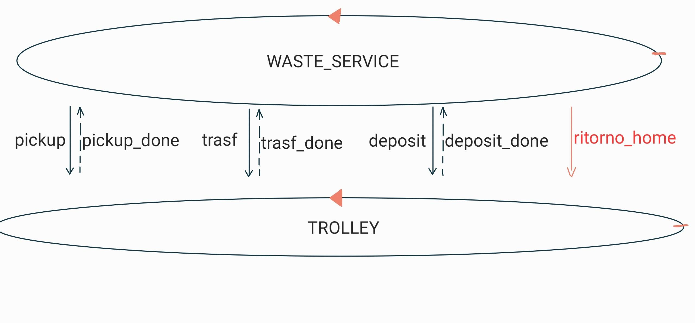
- Il TROLLEY non viene considerato come un attuatore, perció contiene logica di business che definisce le azioni da compiere. In questo modo si semplifica l'implementazione del WASTE_SERVICE ma il TROLLEY non é riutilizzabile perché dipendente dal sistema. 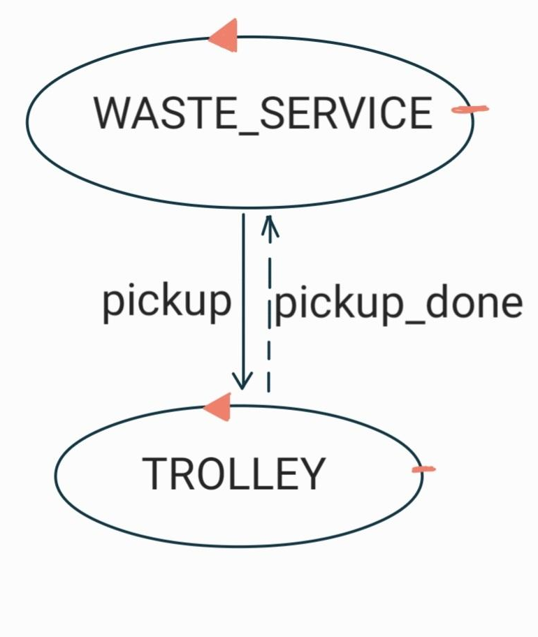
CONCLUSIONI
Vi sono due possibili alternative:- Realizzare un TROLLEY come attuatore, gestendo una nuova richiesta solo dopo aver terminato l'azione di deposito.
- Introdurre logica di business nel TROLLEY (oppure in un'entitá terza), gestendo la richiesta di carico successiva dopo aver effettuato il pick up.
SOLUZIONE PROPOSTA
Dopo l'analisi appena effettuata proponiamo una possibile soluzione, che a nostro parere incorpora la maggior parte dei vantaggi:Il nostro obiettivo è quello di rendere il TROLLEY un attuatore, ossia indipendente dalla logica dell'applicazione.
A tal proposito il WASTE_SERVICE viene modellato come un controller che comunica passo passo le varie azioni da compiere al TROLLEY attraverso opportune request: pickup, trasf, deposit; e un dispatch: ritorno_home.
Inoltre, la risposta loadaccept viene utilizzata per comunicare al WASTE_TRUCK, il cui carico é stato accettato, di poter liberare l'area INDOOR in quanto é stato effettuato il pick up.
Al termine dell'azione di deposito verrá comunicato al TROLLEY se recarsi nuovamente nell'area INDOOR (pickup) oppure in HOME (ritorno_home).
ARCHITETTURA LOGICA
La soluzione che quindi proponiamo presenta la seguente architettura logica:CODICE: Modello esegibile
TEST: Test plan
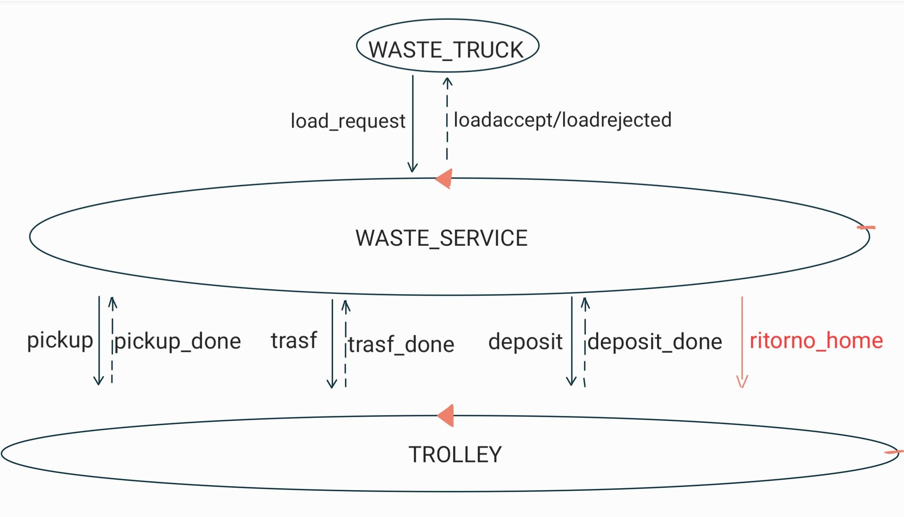
PROBLEMATICHE RISCONTATE DURANTE LA FASE DI TEST
GRANULARITÁ DEL TEST
In fase di verifica della correttezza dell'azione di deposito vi possono essere due alternative di testing:- Granularitá FINE: per ogni azione di deposito si controlla il corretto ordine delle sotto-operazioni che vengono effettuate, quindi vi é la neccessitá dopo ogni azione (Pick up, Trasferimento, Deposito, Ritorno alla HOME) di conoscere lo stato in cui si trova il TROLLY.
- Granularitá GROSSA: é suffciente verificare, terminata l'azione di deposito, che il TROLLEY ritorni alla HOME oppure inizi una nuova operazione di pickup.
CONCLUSIONI
La prima opzione implica il bisogno di conoscere in un qualche modo lo stato in cui si trova il TROLLEY, questa problematica verrá analizzata al punto successivo.La seconda alternativa, invece, prevede un'implementazione piú semplice, peró comporta un livello di idettaglio inferiore.
RILEVAZIONE DELLO STATO DEL TROLLEY
Per ottenre questa informazione in fase di test vi sono due possibilitá:- Utilizzo di EVENTI: il TROLLEY ad ogni transizione di stato emette un evento che la segnala. In questo caso é necessario realizzare una test unit sensibile a tali eventi.
- Sfruttamento dell'OSSERVABILITÁ COAP: visto che il TROLLEY é modellato come un attore QAK (link) é una risorsa COAP, perció si puó sfruttare questa caratteristica mediante un COAP Observer per verificare questa informazione.
CONCLUSIONI
Sicuramente la seconda alternativa permette di realizzare una soluzione piú pulita senza dover introdurre interazioni non previste dai requisiti.FILE DI CONFIGURAZIONE
Inizialmente, per facilitá di implementazione, i parametri che regolano il funzionamento del sistema (Capacitá massima, Coordinate dei box, Situazione iniziale dei box, etc) possono essere cablati all'interno di esso.Successivamnete, in un secondo momento potrebbe essere opportuna l'introduzione di un file di configurazione, ad esempio scritto in linguaggio JSON e letto da un POJO apposito, per consentire la definizione dei paramentri del sistema in fase di avvio dell'applicazione.In questo modo aumenta notevolmente la flessibilitá del sistema.
File di configurazione json
Pojo dedicato alla configurazione
Modello eseguibile con file di configurazione
INTRODUZIONE DEL BASIC ROBOT
Il committente oltre al bascic robot, mette a disposizione altri componenti che potrebbero essere sfruttati per realizzare la definizione e l'esecuzione delle azioni che il TROLLEY deve compiere.In particolare sono presenti:- un planner (link) che consente di definire il percorso piú breve, intenso come sequenza di azioni, per raggiungere un determinato punto.
- un path executor (link) che ricevuta una sequenza di azioni é in grado di eseguirle una alla volta.
RAPPRESENTAZIONE DELL'AREA DI LAVORO
Inizialmente la rappresentazione dell'area di lavoro mediante una mappa, per facilitá di implementazione, puó essere definita a priori.In un secondo momento, potrebbe essere opportuno ottenere questa informazione, mediante di un ulteriore componente (mapperQak22 [link]). Esso, all'avvio del sistema, esegue una perlustrazione dell'area fornendone una rappresentazione sotto forma mappa all'interno di un file di testo. Sicuramente questa soluzione conferisce maggiore flessibilitá al sistema, peró viene appesantita la fase di avvio del sistema.
PERCORSO STATICO O DINAMICO
Il percorso (path), inteso come sequenza di azioni di spostamento che il TROLLEY deve eseguire, puó essere definito in due modi possibili:- PATH STATICO: il percorso viene cablato all'interno del sistema, facilitando l'implementazione del sistema. Inoltre non é neccesario aggiungere il planner per calcolare il percorso.
- PATH DINAMICO: viene introdotto il planner, con cui il WASTE_SERVICE dovrá interfacciarsi per ottenere i percorsi da comunicare al TROLLEY. In questo modo aumenta notevolemente la flessibilitá del sistema.
CONCLUSIONI
Sicuramente la seconda alternativa permette di realizzare una soluzione piú flessibilitá a fronte di cambiamenti dell'area di lavoro, ovviamente sará necessaria l'aggiunta del planner, ma esso ci é giá stato fornito dal commitente.Test plans
CODICE: Test plan
É stato realizzato un test plan nel quale vengono effettuate due richieste:
É stato realizzato un test plan nel quale vengono effettuate due richieste:
- VETRO, 2 => ACCETTATA
- VETRO, 9 => RIFIUTATA
Project
Con l'introduzione del planner é stato necessario sostituire il dispatch ritrono_home con una comunicazione con schema
request-response, ció viene fatto per indicare al WASTE_SERVICE la posizione corrente del TROLLEY dopo che é stato
effettuato il rientro alla HOME.
CODICE: Modello esguibile
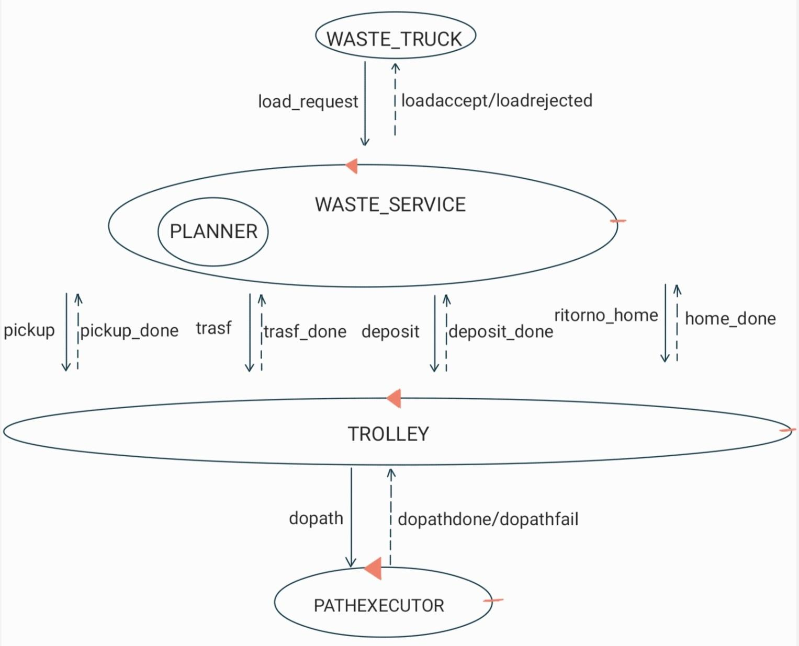
CODICE: Modello esguibile
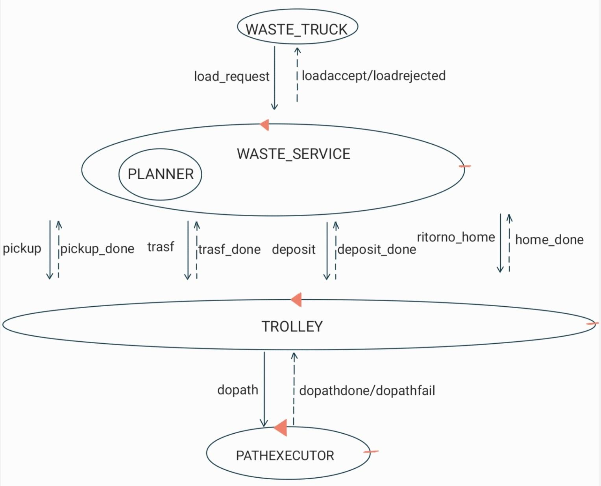
Testing
Deployment
Maintenance
Davide Filoni email: davide.filoni2@studio.unibo.it
Fabio Scagliarini : fabio.scagliarini@studio.unibo.it
Filippo Comastri : filippo.comastri2@studio.unibo.it
Link git
Fabio Scagliarini : fabio.scagliarini@studio.unibo.it
Filippo Comastri : filippo.comastri2@studio.unibo.it
Link git